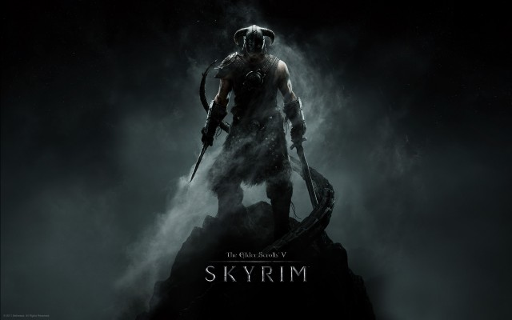
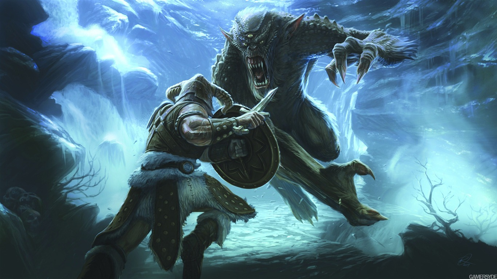
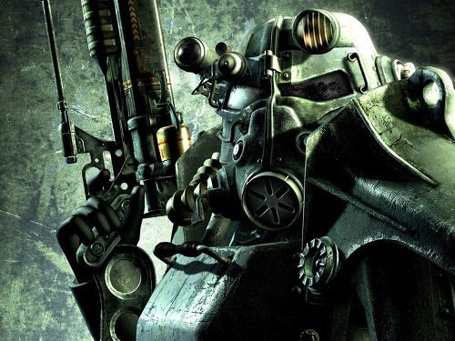
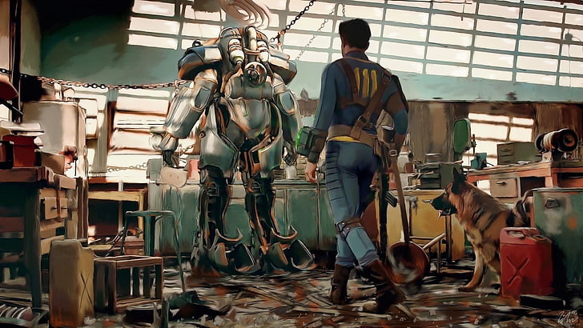
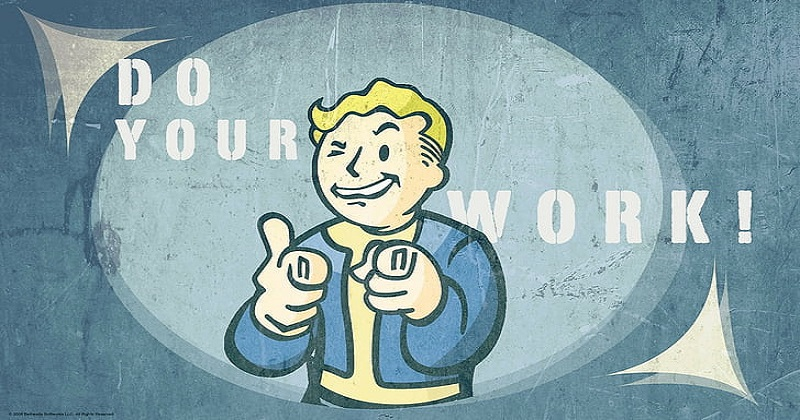

The Elder Scrolls. 베데스다 게임 스튜디오가 개발하고 베데스다 소프트웍스가 유통하는 오픈 월드 판타지 ARPG 시리즈이다.
우수한 그래픽으로 구현한 방대한 세계와 디테일, 자유로운 게임플레이와 흥미로운 설정 등으로 알려져 있다.

아레나, 대거폴, 90년대 말에 발매한 외전작들까지는 흥행에 성공하지 못했으나, 최초의 콘솔 발매작인 엘더스크롤 3: 모로윈드 이후 시리즈가 급성장하여
모로윈드, 오블리비언, 스카이림은 모두 다수의 올해의 게임상을 받았으며 시리즈 통틀어 세계적으로 5천8백만 장 이상이 판매되었으며
특히 5번째 작품인 스카이림은 3천만 장 이상이 판매되었다.

고전 1인칭 RPG의 계승자
장르적으로는 1인칭 액션 RPG(ARPG)로서 분류할 수 있다.
작품 따라 3인칭 시점을 지원하기도 하지만 어디까지나 경치구경 정도에나 쓰는 정도.
사실 1인칭 액션 RPG란 것 자체가 1980년대부터 서구권에서 등장하기 시작했기 때문에 장르 역사적으로는 굉장히 오래되었으며,
시간이 지나며 많은 변화가 있었음에도 결과적으로는 이런 고전 1인칭 RPG를 현대에도 계승하는 드문 게임이라고 볼 수 있다.
액션성은 낮지만 위저드리 시리즈나 마이트 앤 매직 등 1인칭으로 판타지 세계를 탐험하는 RPG들이 유행하기 시작한 것도 이 시점으로,
엘더스크롤 시리즈는 방대한 오픈월드를 자유롭게 탐험하는 게임이지만 던전의 비중이 높은 것도 이 탓.
이후 서구권 RPG는 다소 몰락하였다가 90년대 후반 발더스 게이트 시리즈의 대박으로 인해, 탑뷰 시점으로 다수의 파티원들을 데리고 전술적으로
플레이하는 게임이 정통 취급받으며 유행하게 되었지만, 엘더스크롤 시리즈는 그 이전 시절의 게임을 계승하고 있는 것.
특히나 파티플레이 요소는 매우 약하고 대부분 혼자, 혹은 짐꾼 취급이나 받는 동료 한둘 정도만 데리고 진행하게 된다.
특히 엘더스크롤 시리즈의 1, 2편인 아레나와 대거폴은 매우 잘 알려져있다시피 이쪽 계열의 명작 울티마 언더월드를 많이 참고하였고
이후에도 이쪽 성향을 많이 띄고 있다. 후술하겠지만 이쪽 장르는 이머시브 심 계열 게임과도 관련이 높으며, 아레나와 대거폴이 나오던 시절에
이머시브 심 장르는 시스템 쇼크 등으로 분화되어 나가고 있었다.
다만, 컨트롤에 의존을 많이 하는 기존의 액션 RPG에 비해서는 스탯이나 캐릭터 성장, 전략전술 같은 요소에도 비중을 많이 두고 있다.
난이도를 높이거나 전투가 어려울 때는 개개인의 컨트롤로 이를 극복하기보다는 어떤 숫자가 높으냐 낮으냐 유리하냐 불리하냐를 따지는 숫자놀음이 중시되고
플레이어 본인도 미리 준비한 아이템이나 마법, 상성이나 기타 특수기능 등을 적절히 활용하는 방식이 권장되는 것이 대표적.
그러나 후속작으로 갈수록 이런 요소들이 줄어들고는 있고 액션성이 강화되기는 한다.
대표적으로 3편 모로윈드에서는 무기를 휘둘러서 맞춰도 스탯이 낮으면 판정상으로는 MISS가 뜨게 되나 4편 오블리비언에서는 이런 요소가 사라졌고,
5편 스카이림에서는 활로 은신 원거리 저격을 해내는 등의 게임성도 보인다. 마찬가지로 대거폴까지는 마우스 방향에 따라서 무기를 사용하는 방법과 명중률,
데미지가 달라졌으며 모로윈드에서는 방향키와 공격버튼을 조합하는 방식으로 각각 다른 스타일의 무기 사용이나 파워 어택을 사용하였으나 이후로는 간략화되었다.
또한 달리기와 점프(아크로바틱) 액션의 비중이 높다. 이례적으로 3편 모로윈드의 경우, 이동속도가 느려서 액션성이 떨어져 보일 수 있으나 스킬수치가
높아지는 후반에서는 시리즈의 다른 작품처럼 달리기 속도와 점프의 유용성이 매우 높아진다. 후속작품들도 다른 액션 게임에서의 요소를 적극적으로 받아들였는데
예를 들어 오블리비언부터는 활시위를 당긴 상태에서 오른쪽 마우스를 클릭하면 시야가 확대되면서 좀 더 정확한 조준이 가능한데(Bow Zoom) 이건 1인칭 슈팅게임(FPS)에서
사용되던 조준 시스템을 그대로 가져온 케이스다.
엘더스크롤의 액션을 잘 드러내는 요소로서 방패가 있다. 방패의 존재 자체는 1편 아레나와 2편 대거폴부터 있었으나
이때는 여타의 CRPG처럼 단지 캐릭터의 방어력 수치를 높이는 것에 기능이 국한되어 있었고 방패 특유의 액션이나 기능은 없었다.
이러던 것이 3편 모로윈드에 와서는 Block이라는 스킬이 추가되고 스탯에 따라서 확률적으로 방어여부를 판정하였다.
판정 성공시 적의 공격을 방패로 막는 모습을 보여주는데 만약 Block에 성공한다면 물리적 데미지를 전혀 입지 않게 되었으나 판정여부가 자동이어서 플레이어가
뭘 개입한다든가 하는 모습은 거의 없었다.
4편 오블리비언부터는 방패를 직접 조종할 수 있게 되었다. 이때부터는 적이 공격하는 타이밍에 맞춰 방패를 대는 컨트롤이 중요했고 Block 스킬의 수치도 중요하지만
플레이어의 직접적인 조작이 매우 중요해졌다. 뿐만 아니라 방패로 쳐서 무장해제, 밀치기(Power Bash), 돌진(Shield Charge) 등의 Perk이 5편 스카이림에서부터
도입되었는데 방패에 공격기능까지 첨가한 이런 액션은 통상적인 CRPG에서는 거의 찾아볼 수 없는 것이며 진압 방패 문서에서도 보듯이 오히려 액션 게임에서 보편화된 요소였다.
엘더스크롤 시리즈는 이걸 그대로 수용한 것.
그 외에도 오른속에는 무기, 왼손에는 마법이라는 스카이림의 기본 세팅도 바이오쇼크에서 따온 것으로 보이고
스토리텔링을 텍스트와 컷신에 의존하지 않고 1인칭 시점을 통해 게임속에서 실시간으로 보여주는 방식은 하프라이프 이후 FPS에서 유행하게 된 방식을
가져온 것으로 보일 수도 있으나 본래 엘더스크롤 : 아레나는 울티마 언더월드의 아류작으로 출발했고 울티마 언더월드는 이머시브 심이라고 불리는 FPS-RPG 혼합장르의 원조로 불린다.
그리고 이머시브 심 장르의 주요 특징 중 하나가 실시간-인게임 연출이다. FPS-RPG 혼합장르인 울티마 언더월드를 모태로 삼는 엘더스크롤 시리즈가
하프라이프같은 현대 FPS를 참고했다는 말은 게임장르의 계보를 완전히 왜곡한 주장이다. 오히려 현대 FPS가 울티마 언더월드를 시조로 하는
이머시브 심 장르(시스템 쇼크, 데이어스 엑스 등)를 참고했기 때문이다. 바이오쇼크 역시 이머시브 심 장르의 대표작 중 하나.
Fallout Series. 폴아웃 시리즈는 뉴클리어 아포칼립스 RPG 시리즈. 제목의 뜻은 '방사성 낙진.' 핵전쟁 후 디스토피아 세계를 낙진에 빗댄 듯 하다.
인터플레이가 1997년 최초로 제작했으며, 인터플레이 부도 이후 2008년부터는 베데스다 소프트웍스가 인터플레이로부터 판권을 구입하여 발매하고 있다.
높은 자유도를 가진 것이 특징이며, 세계관은 공유하지만 1-2편과 3-4편의 제작사와 분위기, 조작법 등이 꽤 차이나는 것이 특징.

핵전쟁 이후의 시대를 다루는 RPG 시리즈로, 핵 만능주의와 매카시즘에 빠져있었던 50년대 미국의 정서와 고도로 발달한 과학 문물 기술,
핵전쟁 이후의 세기말적인 분위기가 어우러진 '복고풍 미래 세계관'이 특징인 포스트 아포칼립스 계열의 장르를 채택한 게임이다.

비슷한 시기 출시된 발더스 게이트 시리즈 등 다른 RPG에 비해 훨씬 높은 자유도를 자랑한다.
시리즈 모두 작품성이 우수하여 1편은 디아블로를 제치고 그해 최고의 RPG상을 수상하기도 했다.
또한, 상업적으로도 그 당시 기준에 비추어 볼 때 준수한 성적을 올렸다.

"전쟁... 전쟁은 결코 변하지 않는다(War... War never changes)"는 시리즈 전체를 관통하는 문장 중 하나로, 인트로마다 이 문장이 나온다.
론 펄먼이 주로 나레이션을 맡아서 하며 한국 성우로는 시영준이 맡아서 하기도 했다.
특징으로는 이 캐치프레이즈를 읽을 때는 두 번째 War에서 약간 발음을 끌고 잔잔한 억양을 담아 말하기 때문에,
전쟁은 언제나 심각한 피해를 일으킨다고 경각심을 일깨우는 교훈적인 느낌으로 말한다기 보다는, 예나 지금이나 수차례 세계를 뒤집을 정도의 큰 싸움이 있어왔어도 잠잠해지는건 잠시뿐이고
또 다시 서로 싸우는 행동을 반복하는 사람들에 대해 질렸다는 듯한 느낌을 보인다.
처음 이 대사가 사용된 1편 오프닝에서 비교적 자세히 설명이 나오는데 로마 제국은 부와 노예를 위해, 스페인 제국은 금과 영토를 위해, 히틀러의 제3제국은 경제적인 힘을 위해라고 언급한 다음,
자원 때문에 일어난 미중전쟁을 설명한다.
즉, 시대가 바뀌어도 사람들의 욕망이 있는 한 전쟁은 계속 일어나며, 이는 핵전쟁으로 끝장난 세상에서도 마찬가지라는 뜻이다